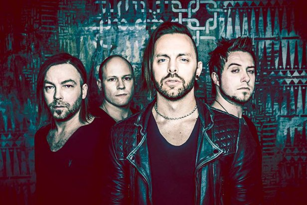

Bullet for My Valentine, often abbreviated as BFMV, are a Welsh heavy metal band from Bridgend, formed in 1998. The band is currently composed of Matthew Tuck (lead vocals, rhythm guitar), Michael Paget (lead guitar, backing vocals), Jason Bowld (drums) and Jamie Mathias (bass guitar, backing vocals). Former members include Michael Thomas, Jason James and Nick Crandle; the latter were on bass. They were formed under the name Jeff Killed John and started their music career by covering songs by Metallica and Nirvana. Jeff Killed John recorded six songs which were not released; two of these tracks were reworked later in their career as Bullet for My Valentine. A change of style from that of Jeff Killed John led the band to change their name.[1] In 2002, the band secured a five-album deal with Sony BMG. The band has stated that their music is influenced by classic metal acts such as Metallica, Iron Maiden and Slayer. The band is part of the Cardiff music scene.
